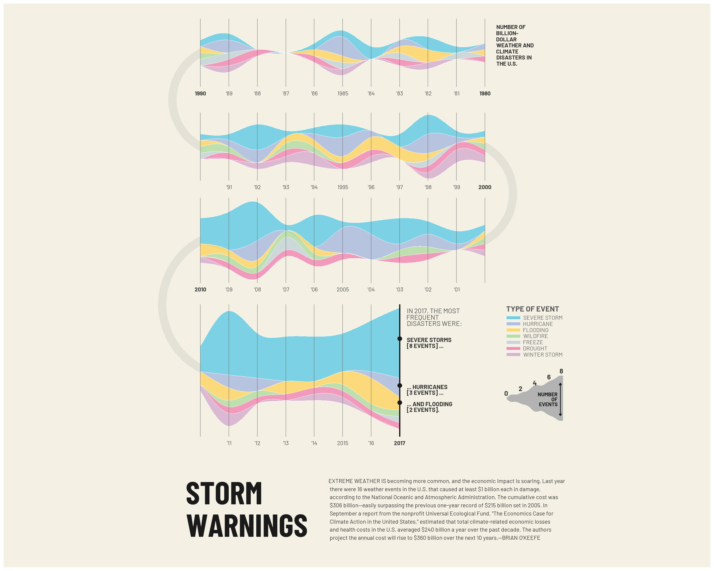

Storm Warnings
This project recreates an editorial visualization originally published by Fortune Magazine, which shows the increase in billion-dollar weather and climate disasters in the United States. The goal was not only to reproduce the data, but also to explore how far an editorial-style layout could be replicated using ggplot2.
Because the original graph was designed for publication in a magazine, certain visual and formatting elements could not be reproduced exactly as in the original image. This provided limitations for the reproduction of the graph. The idea was to reproduce the Fortune Magazine visualization as close as possible.
Throughout the process, I found limitations to represent this graph. Some elements of the original design—especially the curved side edges of the streams—proved difficult to reproduce, which led to several design decisions and adaptations.

Getting started
Loading libraries
I start by loading the libraries used throughout the project. tidyverse handles data cleaning and transformation, while janitor is used to standardize column names. ggplot2 is the main plotting tool, and showtext allows the use of Google Fonts. patchwork is used later to combine the chart with the text panel.
Adding fonts
To match the editorial style of the reference visualization, I load two Google Fonts. Barlow Condensed is used for titles, while Barlow is used for annotations and labels. These were the most similar fonts to the original ones. Original fonts were not available.
font_add_google("Barlow", "barlow")
font_add_google("Barlow Condensed", "Barlow Condensed")
showtext_auto()Loading data
The dataset contains National Oceanic and Atmospheric Administration records of U.S. weather and climate disasters. I skip the first two rows because they contain metadata rather than observations. I also clean the column names to avoid issues with inconsistent naming later in the process. I use the janitor package clean names function to standardize the name of the columns (lowercase)
data_raw <- read_csv("events-US-1980-2024.csv", skip = 2, show_col_types = FALSE) |>
clean_names()Recoding and tidying data
In this step, I extract the year from the event start date and limit the analysis to the period shown in the original visualization (1980–2017). Disaster categories are recoded into the set of labels used in the original visualization.
I then aggregate the data by year and disaster type, counting how many events occur in each category. Missing year–type combinations are filled with zeros to ensure the stacked areas remain continuous. Finally, I define a fixed factor order to control how the categories are stacked visually.
data_raw <- read_csv("events-US-1980-2024.csv", skip = 2, show_col_types = FALSE) |>
clean_names()
data_aggregated <- data_raw |>
mutate(year = str_sub(as.character(begin_date), 1, 4) |> as.numeric()) |>
filter(year >= 1980, year <= 2017) |>
mutate(
disaster_type = case_when(
disaster == "Tropical Cyclone" ~ "HURRICANE",
disaster == "Drought" ~ "DROUGHT",
disaster == "Severe Storm" ~ "SEVERE STORM",
disaster == "Flooding" ~ "FLOODING",
disaster == "Freeze" ~ "FREEZE",
disaster == "Wildfire" ~ "WILDFIRE",
disaster == "Winter Storm" ~ "WINTER STORM",
.default = disaster
)
) |>
group_by(year, disaster_type) |>
summarise(n_events = n(), .groups = "drop") |>
complete(year = 1980:2017, disaster_type, fill = list(n_events = 0)) |>
mutate(
disaster_type = factor(disaster_type, levels = c(
"SEVERE STORM", "HURRICANE", "FLOODING", "WILDFIRE",
"FREEZE", "DROUGHT", "WINTER STORM"
))
)Manual coordinates
At this point, I stop using the default ggplot scales and switch to manual coordinates. This is mainly because ggplot does not allow this kind of segmented timeline directly. Setting a fixed width per year gives me full control over where each year is placed and makes the segmented layout possible.
I split the timeline into four segments corresponding to decades. Each segment is stored separately and then recombined, which makes it easier to control direction, spacing, and vertical offsets later on.
I manually calculate the vertical stacking of the ribbons for each year. I use cumulative sums to define the top and bottom of each category and then center the stack vertically. Different x-directions and vertical offsets are applied to each segment to recreate the back-and-forth layout of the original graphic.
WIDTH_FACTOR <- 2 #Width of each year
MAX_WIDTH <- 10 * WIDTH_FACTOR #width of each segment
#dividing data for each segment
seg1 <- data_aggregated |> filter(year <= 1990) |> mutate(segment = 1)
seg2 <- data_aggregated |> filter(year >= 1990, year <= 2000) |> mutate(segment = 2)
seg3 <- data_aggregated |> filter(year >= 2000, year <= 2010) |> mutate(segment = 3)
seg4 <- data_aggregated |> filter(year >= 2010) |> mutate(segment = 4)
path_data_base <- bind_rows(seg1, seg2, seg3, seg4)
#Ordering Y axis position
path_data <- path_data_base |>
arrange(segment, year, desc(disaster_type)) |>
group_by(segment, year) |>
mutate(
SCALE_FACTOR = 1.5,
total_height = sum(n_events) * SCALE_FACTOR,
center_offset = -total_height / 2,
ymax_cumulative = cumsum(n_events * SCALE_FACTOR),
ymin_cumulative = ymax_cumulative - (n_events * SCALE_FACTOR),
y_centered_min = ymin_cumulative + center_offset,
y_centered_max = ymax_cumulative + center_offset
) |>
ungroup() |>
mutate(
x_new = case_when(
segment == 1 ~ (1990 - year) * WIDTH_FACTOR,
segment == 2 ~ (year - 1990) * WIDTH_FACTOR,
segment == 3 ~ (2010 - year) * WIDTH_FACTOR,
segment == 4 ~ (year - 2010) * WIDTH_FACTOR
),
y_offset = case_when(
segment == 1 ~ 0,
segment == 2 ~ -22,
segment == 3 ~ -44,
segment == 4 ~ -74
),
y_final_min = y_centered_min + y_offset,
y_final_max = y_centered_max + y_offset
)Creating curves for stacked area chart
To soften the appearance of the stacked areas, I smooth the top and bottom boundaries using spline interpolation. This helps reduce sharp corners between years and gives the streams a more fluid look. Then, the smoothing function is applied separately to each disaster type within each segment.
smooth_segment <- function(df) {
if(nrow(df) < 2) return(data.frame()) #two necessary points to create a curve -> creating a union
df_augmented <- df |> arrange(x_new)#ordered by the established data
x_seq <- seq(min(df$x_new), max(df$x_new), length.out = 400)
smooth_min <- spline(df_augmented$x_new, df_augmented$y_final_min, xout = x_seq, method = "natural")
smooth_max <- spline(df_augmented$x_new, df_augmented$y_final_max, xout = x_seq, method = "natural") #smoothing and creating the curve
data.frame(x_new = x_seq, y_final_min = smooth_min$y, y_final_max = smooth_max$y)
}
path_data_smooth <- path_data |>
group_by(segment, disaster_type) |>
group_modify(~ smooth_segment(.x)) |>
ungroup() #apply to all segments Limitation: side curves
At this point, I tried to reproduce the curved side edges visible in the original visualization. However, controlling the lateral shape of stacked ribbons in ggplot2 is very limited, especially when the data is manually segmented and repositioned.
While I could smooth the top and bottom boundaries, I was not able to apply the same level of control to the left and right edges without distorting the data or breaking the stacking logic. Because of this limitation, I decided to change the approach.
Instead of forcing curved side edges, I introduced segment boundaries and added curved connectors between segments to suggest continuity. This solution preserves visual flow, even though it does not exactly replicate the original design.
Creating connectors of the different segments
These are purely visual, to understand the flow of the data and how to read it.
connectors_left <- data.frame(
x = 0, xend = 0,
y = c(0, -44),
yend = c(-22, -74)
)
connectors_right <- data.frame(
x = MAX_WIDTH, xend = MAX_WIDTH,
y = -22,
yend = -44
)Defining colors
Selecting the colors of each disaster as the original visualization.
chart_colors <- c(
"SEVERE STORM" = "#6fcfe4", "HURRICANE" = "#b0bfe0", "FLOODING" = "#fdd870",
"WILDFIRE" = "#b8dda8", "FREEZE" = "#c7d6da", "DROUGHT" = "#f291b8",
"WINTER STORM" = "#d9b3d0"
)Creating diagram “Number of events”
In the original Fortune graphic there is a small “scale” that explains how thick the streams are (how many events they represent). Since my main chart does not have a traditional y-axis, I needed a custom visual legend to communicate magnitude.
Instead of using geom_text() on a regular axis, I generate a small wavy ribbon with increasing thickness. The waves are not data-driven: they are just a design element to match the editorial style. I position this scale next to 2017 because that area already contains explanatory annotations, so it works like an info panel. I create a “fake” dataset to draw the scale ribbon. The ribbon thickness increaes with x to visually represent 0 to 8.
POS_2017 <- 7 * WIDTH_FACTOR #base position of plot
SHIFT_RIGHT <- 7.5
WAVE_HEIGHT_FACTOR <- 5.5
scale_data <- data.frame(x = seq(0, 8, length.out = 200)) %>%
mutate(
base_thickness = x * 0.12,
wave1 = sin(x * 2) * 0.05,
wave2 = sin(x * 3.5) * 0.03,
thickness = base_thickness + wave1 + wave2,
x_scaled = POS_2017 + SHIFT_RIGHT + x * 0.5,
y_top = -81 + thickness * WAVE_HEIGHT_FACTOR, # Más alto
y_bottom = -81 - thickness * WAVE_HEIGHT_FACTOR # Más bajo
)Main graph
This is the core of my visualization. This is the main plotting step where I assemble everything: the segmented stream chart, the connecting curves between segments, the guide lines, and all the editorial annotations.
A key decision here is that the actual data is drawn using geom_ribbon() with the smoothed boundaries computed earlier. This lets me keep control over the exact shapes and stacking while still getting a stream-like appearance.
Because I could not recreate the original curved side edges (the tapered “caps” on each segment) with ggplot2, I use two strategies instead:
vertical guide lines and clean segment boundaries to keep the layout readable, and
large curved connectors (geom_curve) to visually suggest continuity between blocks.
geom_ribbon () draws the actual stream areas. I group by segment and disaster type to ensure each ribbon is plotted correctly. I add a thin white border to separate categories, which helps readability when colors are similar.
After the ribbons, I add decorative vertical line blocks and the top title. These lines imitate the reference layout and also help the reader orient inside each “row” of the segmented timeline.
The year labels are not driven by an axis. Since I used manual coordinates and segmented rows, I place years using annotate(“text”). It is repetitive, but it gives me full control over the exact placement and the bold emphasis on decade boundaries (1980, 1990, 2000, 2010, 2017).
For the 2017 callout, I add a dark vertical marker and three points to highlight the categories mentioned in the text annotation. This is an editorial annotation layer.
The “Type of event” legend is also custom. I build it using rectangles + text so it matches the layout of the reference. A standard ggplot legend would be easier, but it would not allow this level of positioning and styling.
Finally, I add the wavy scale ribbon created earlier. This acts as a magnitude guide (0–8 events). I then place the numeric labels and a double arrow, again as manual annotations.
The plot uses a fixed coordinate ratio to avoid distortion. I remove axes and background using theme_void() and set a light paper-like background color to match the magazine look.
main_graph <- ggplot() +
geom_vline(xintercept = seq(0, MAX_WIDTH, by = WIDTH_FACTOR),
color = "#e5e3d8", linewidth = 0.3, linetype = "dotted") +
geom_curve(data = connectors_left, aes(x=x, xend=xend, y=y, yend=yend),
curvature = 0.6, angle = 90, ncp = 15,
color = "#d5d3c8", linewidth = 6, lineend = "round", alpha = 0.5) +
geom_curve(data = connectors_right, aes(x=x, xend=xend, y=y, yend=yend),
curvature = -0.6, angle = 90, ncp = 15,
color = "#d5d3c8", linewidth = 6, lineend = "round", alpha = 0.5) +
#creating the curves that connect segments
geom_ribbon(
data = path_data_smooth,
aes(x = x_new, ymin = y_final_min, ymax = y_final_max, fill = disaster_type,
group = interaction(segment, disaster_type)),
color = "white", linewidth = 0.15, alpha = 0.9
) +
scale_fill_manual(values = chart_colors) + #representing each disaster
# Vertical lines
annotate("segment", x = seq(0, 10, by = 1) * WIDTH_FACTOR, y = -8, yend = 8, color = "grey40", linewidth = 0.4, alpha = 0.6) +
annotate("segment", x = seq(0, 10, by = 1) * WIDTH_FACTOR, y = -30, yend = -14, color = "grey40", linewidth = 0.4, alpha = 0.6) +
annotate("segment", x = seq(0, 10, by = 1) * WIDTH_FACTOR, y = -54, yend = -34, color = "grey40", linewidth = 0.4, alpha = 0.6) +
annotate("segment", x = seq(0, 7, by = 1) * WIDTH_FACTOR, y = -90, yend = -59, color = "grey40", linewidth = 0.4, alpha = 0.6) +
# Up title
annotate("text", x = MAX_WIDTH + 0.8, y = 6.5,
label = "NUMBER OF\nBILLION-\nDOLLAR\nWEATHER AND\nCLIMATE\nDISASTERS IN\nTHE U.S.",
size = 3, color = "grey20", hjust = 0, vjust = 1,
lineheight = 0.9, fontface = "bold", family = "barlow") +
# Years annotation- segment 1
annotate("text", x = 10 * WIDTH_FACTOR, y = -9.5, label = "1980", size = 3, color = "grey22", fontface = "bold", family = "barlow") +
annotate("text", x = 9 * WIDTH_FACTOR, y = -9.5, label = "'81", size = 3, color = "grey30", family = "barlow") +
annotate("text", x = 8 * WIDTH_FACTOR, y = -9.5, label = "'82", size = 3, color = "grey30", family = "barlow") +
annotate("text", x = 7 * WIDTH_FACTOR, y = -9.5, label = "'83", size = 3, color = "grey30", family = "barlow") +
annotate("text", x = 6 * WIDTH_FACTOR, y = -9.5, label = "'84", size = 3, color = "grey30", family = "barlow") +
annotate("text", x = 5 * WIDTH_FACTOR, y = -9.5, label = "1985", size = 3, color = "grey30", family = "barlow") +
annotate("text", x = 4 * WIDTH_FACTOR, y = -9.5, label = "'86", size = 3, color = "grey30", family = "barlow") +
annotate("text", x = 3 * WIDTH_FACTOR, y = -9.5, label = "'87", size = 3, color = "grey30", family = "barlow") +
annotate("text", x = 2 * WIDTH_FACTOR, y = -9.5, label = "'88", size = 3, color = "grey30", family = "barlow") +
annotate("text", x = 1 * WIDTH_FACTOR, y = -9.5, label = "'89", size = 3, color = "grey30", family = "barlow") +
annotate("text", x = 0 * WIDTH_FACTOR, y = -9.5, label = "1990", size = 3, color = "grey22", fontface = "bold", family = "barlow") +
# Years annotation- segment 2
annotate("text", x = 1 * WIDTH_FACTOR, y = -31.5, label = "'91", size = 3, color = "grey30", family = "barlow") +
annotate("text", x = 2 * WIDTH_FACTOR, y = -31.5, label = "'92", size = 3, color = "grey30", family = "barlow") +
annotate("text", x = 3 * WIDTH_FACTOR, y = -31.5, label = "'93", size = 3, color = "grey30", family = "barlow") +
annotate("text", x = 4 * WIDTH_FACTOR, y = -31.5, label = "'94", size = 3, color = "grey30", family = "barlow") +
annotate("text", x = 5 * WIDTH_FACTOR, y = -31.5, label = "1995", size = 3, color = "grey30", family = "barlow") +
annotate("text", x = 6 * WIDTH_FACTOR, y = -31.5, label = "'96", size = 3, color = "grey30", family = "barlow") +
annotate("text", x = 7 * WIDTH_FACTOR, y = -31.5, label = "'97", size = 3, color = "grey30", family = "barlow") +
annotate("text", x = 8 * WIDTH_FACTOR, y = -31.5, label = "'98", size = 3, color = "grey30", family = "barlow") +
annotate("text", x = 9 * WIDTH_FACTOR, y = -31.5, label = "'99", size = 3, color = "grey30", family = "barlow") +
annotate("text", x = 10 * WIDTH_FACTOR, y = -31.5, label = "2000", size = 3, color = "grey22", fontface = "bold", family = "barlow") +
# Years annotation- segment 3
annotate("text", x = 9 * WIDTH_FACTOR, y = -55.5, label = "'01", size = 3, color = "grey30", family = "barlow") +
annotate("text", x = 8 * WIDTH_FACTOR, y = -55.5, label = "'02", size = 3, color = "grey30", family = "barlow") +
annotate("text", x = 7 * WIDTH_FACTOR, y = -55.5, label = "'03", size = 3, color = "grey30", family = "barlow") +
annotate("text", x = 6 * WIDTH_FACTOR, y = -55.5, label = "'04", size = 3, color = "grey30", family = "barlow") +
annotate("text", x = 5 * WIDTH_FACTOR, y = -55.5, label = "2005", size = 3, color = "grey30", family = "barlow") +
annotate("text", x = 4 * WIDTH_FACTOR, y = -55.5, label = "'06", size = 3, color = "grey30", family = "barlow") +
annotate("text", x = 3 * WIDTH_FACTOR, y = -55.5, label = "'07", size = 3, color = "grey30", family = "barlow") +
annotate("text", x = 2 * WIDTH_FACTOR, y = -55.5, label = "'08", size = 3, color = "grey30", family = "barlow") +
annotate("text", x = 1 * WIDTH_FACTOR, y = -55.5, label = "'09", size = 3, color = "grey30", family = "barlow") +
annotate("text", x = 0 * WIDTH_FACTOR, y = -55.5, label = "2010", size = 3, color = "grey22", fontface = "bold", family = "barlow") +
# Years annotation- segment 4
annotate("text", x = 1 * WIDTH_FACTOR, y = -91.5, label = "'11", size = 3, color = "grey30", family = "barlow") +
annotate("text", x = 2 * WIDTH_FACTOR, y = -91.5, label = "'12", size = 3, color = "grey30", family = "barlow") +
annotate("text", x = 3 * WIDTH_FACTOR, y = -91.5, label = "'13", size = 3, color = "grey30", family = "barlow") +
annotate("text", x = 4 * WIDTH_FACTOR, y = -91.5, label = "'14", size = 3, color = "grey30", family = "barlow") +
annotate("text", x = 5 * WIDTH_FACTOR, y = -91.5, label = "2015", size = 3, color = "grey30", family = "barlow") +
annotate("text", x = 6 * WIDTH_FACTOR, y = -91.5, label = "'16", size = 3, color = "grey30", family = "barlow") +
annotate("text", x = POS_2017, y = -91.5, label = "2017", size = 3, color = "grey22", fontface = "bold", family = "barlow") +
# 2017
annotate("segment", x = POS_2017, y = -90, xend = POS_2017, yend = -59, color = "grey10", linewidth = 1) +
annotate("point", x = POS_2017, y = c(-67, -78, -82), color = "grey10", size = 3, shape = 19) +
annotate("text", x = POS_2017 + 0.5, y = -60, label = "IN 2017, THE MOST\nFREQUENT\nDISASTERS WERE:", size = 3.5, color = "grey30", hjust = 0, vjust = 1, lineheight = 0.8, family = "barlow") +
annotate("text", x = POS_2017 + 0.5, y = -68, label = "SEVERE STORMS\n[8 EVENTS] ...", size = 3.2, color = "grey20", hjust = 0, vjust = 0.5, lineheight = 0.8, fontface = "bold", family = "barlow") +
annotate("text", x = POS_2017 + 0.5, y = -79, label = "... HURRICANES\n[3 EVENTS] ...", size = 3.2, color = "grey20", hjust = 0, vjust = 0.5, lineheight = 0.8, fontface = "bold", family = "barlow") +
annotate("text", x = POS_2017 + 0.5, y = -83, label = "... AND FLOODING\n[2 EVENTS].", size = 3.2, color = "grey20", hjust = 0, vjust = 0.5, lineheight = 0.8, fontface = "bold", family = "barlow") +
# Type of event
annotate("text", x = POS_2017 + SHIFT_RIGHT, y = -60, label = "TYPE OF EVENT", fontface = "bold", size = 4, color = "grey35", hjust = 0, family = "barlow") +
annotate("rect", xmin = POS_2017 + SHIFT_RIGHT, xmax = POS_2017 + SHIFT_RIGHT + 1.0,
ymin = -62.5 + c(0, -1.8, -3.6, -5.4, -7.2, -9.0, -10.8) * 0.8,
ymax = -62.5 + c(1.0, -0.8, -2.6, -4.4, -6.2, -8.0, -9.8) * 0.8,
fill = chart_colors, color = "white", linewidth = 0.2) +
annotate("text", x = POS_2017 + SHIFT_RIGHT + 1.2,
y = -62.5 + c(0.5, -1.3, -3.1, -4.9, -6.7, -8.5, -10.3) * 0.8,
label = c("SEVERE STORM", "HURRICANE", "FLOODING", "WILDFIRE", "FREEZE", "DROUGHT", "WINTER STORM"),
hjust = 0, size = 3, color = "grey40", family = "barlow") +
# Number of events diagram
geom_ribbon(data = scale_data, aes(x = x_scaled, ymin = y_bottom, ymax = y_top),
fill = "grey70", color = NA) +
annotate("text", x = POS_2017 + SHIFT_RIGHT + 0, y = -89.5 + 1.75 * 5.5, label = "0",
size = 3.5, color = "grey20", fontface = "bold", family = "barlow") +
annotate("text", x = POS_2017 + SHIFT_RIGHT + 1.0, y = -89.5 + 1.95 * 5.5, label = "2",
size = 3.5, color = "grey20", fontface = "bold", family = "barlow") +
annotate("text", x = POS_2017 + SHIFT_RIGHT + 2.0, y = -89.5 + 2.20 * 5.5, label = "4",
size = 3.5, color = "grey20", fontface = "bold", family = "barlow") +
annotate("text", x = POS_2017 + SHIFT_RIGHT + 3.0, y = -89.5 + 2.45 * 5.5, label = "6",
size = 3.5, color = "grey20", fontface = "bold", family = "barlow") +
annotate("text", x = POS_2017 + SHIFT_RIGHT + 3.88, y = -89.5 + 2.7 * 5.5, label = "8",
size = 3.5, color = "grey20", fontface = "bold", family = "barlow") +
annotate("segment", x = POS_2017 + SHIFT_RIGHT + 3.8, y = -89.5 + 0.8 * 5.5,
xend = POS_2017 + SHIFT_RIGHT + 3.8, yend = -89.5 + 2.2 * 5.5,
arrow = arrow(length = unit(0.12, "cm"), type = "closed", ends = "both"),
color = "grey10", linewidth = 0.6) +
annotate("text", x = POS_2017 + SHIFT_RIGHT + 3.6, y = -89.5 + 1.5 * 5.5,
label = "NUMBER\nOF\nEVENTS",
size = 2.8, color = "grey10", fontface = "bold",
hjust = 1, vjust = 0.5, lineheight = 0.8, family = "barlow") +
coord_fixed(ratio = 0.3, xlim = c(-5, POS_2017 + 13), ylim = c(-95, 10), expand = FALSE) +
theme_void() +
theme(plot.background = element_rect(fill = "#f4f1e4", color = NA),
plot.margin = margin(10, 30, 5, 30),
legend.position = "none")Title and descrption paragrah
The reference visualization includes a strong headline and a long editorial paragraph. I reproduce that by creating a separate ggplot object where I only place text. Doing this separately makes layout control easier and avoids messing with the main chart’s coordinate system.
text_panel <- ggplot() +
annotate("text", x = 5, y = 0.5,
label = "STORM\nWARNINGS",
size = 17, color = "grey10", hjust = 0, vjust = 0.5,
lineheight = 0.85, fontface = "bold", family = "Barlow Condensed") +
annotate("text", x = 12.5, y = 0.5,
label ="EXTREME WEATHER IS becoming more common, and the economic impact is soaring. Last year\n there were 16 weather events in the U.S. that caused at least $1 billion each in damage,\n according to the National Oceanic and Atmospheric Administration. The cumulative cost was\n $306 billion—easily surpassing the previous one-year record of $215 billion set in 2005. In\n September a report from the nonprofit Universal Ecological Fund, \"The Economics Case for\n Climate Action in the United States,\" estimated that total climate-related economic losses\n and health costs in the U.S. averaged $240 billion a year over the past decade. The authors\n project the annual cost will rise to $360 billion over the next 10 years.—BRIAN O'KEEFE",
size = 3, color = "grey20", hjust = 0, vjust = 0.5, lineheight = 1.2, family = "barlow") +
xlim(-2, 30) + ylim(0, 1) +
theme_void() +
theme(plot.background = element_rect(fill = "#f4f1e4", color = NA),
plot.margin = margin(5, 30, 20, 30))Patchwork to create final project
I combine the main visualization and the text panel into a single figure using patchwork. This reproduces the two-part editorial composition from the reference graphic (chart on top, text below).
final_plot <- main_graph / text_panel + plot_layout(heights = c(10, 2))
print(final_plot)
Improvement
Chronological direction
In this section I tried an alternative version of the chart where the timeline in every segment runs left-to-right. In the main plot I used a zig-zag direction (some segments go right-to-left) to mimic the reference layout, but it makes reading the years slightly less intuitive.
To build the chronological version, I keep the same data preparation, stacking logic, and smoothing. The main differences are:
x_new is recomputed so all segments increase left-to-right.
The right-side info panel (legend + scale) is shifted left using a new SHIFT_RIGHT_CHRONO.
I remove the curved connectors between segments, because the zig-zag turn is no longer part of the layout.
SHIFT_RIGHT_CHRONO <- 3.5 # Moved to the rightscale_data_chrono <- data.frame(x = seq(0, 8, length.out = 200)) %>%
mutate(
base_thickness = x * 0.12,
wave1 = sin(x * 2) * 0.05,
wave2 = sin(x * 3.5) * 0.03,
thickness = base_thickness + wave1 + wave2,
x_scaled = POS_2017 + SHIFT_RIGHT_CHRONO + x * 0.5,
y_top = -81 + thickness * WAVE_HEIGHT_FACTOR,
y_bottom = -81 - thickness * WAVE_HEIGHT_FACTOR
)path_data_chrono <- path_data_base |>
arrange(segment, year, desc(disaster_type)) |>
group_by(segment, year) |>
mutate(
SCALE_FACTOR = 1.5,
total_height = sum(n_events) * SCALE_FACTOR,
center_offset = -total_height / 2,
ymax_cumulative = cumsum(n_events * SCALE_FACTOR),
ymin_cumulative = ymax_cumulative - (n_events * SCALE_FACTOR),
y_centered_min = ymin_cumulative + center_offset,
y_centered_max = ymax_cumulative + center_offset
) |>
ungroup() |>
mutate(
# Switching direction
x_new = case_when(
segment == 1 ~ (year - 1980) * WIDTH_FACTOR,
segment == 2 ~ (year - 1990) * WIDTH_FACTOR,
segment == 3 ~ (year - 2000) * WIDTH_FACTOR,
segment == 4 ~ (year - 2010) * WIDTH_FACTOR
),
y_offset = case_when(
segment == 1 ~ 0,
segment == 2 ~ -22,
segment == 3 ~ -44,
segment == 4 ~ -74
),
y_final_min = y_centered_min + y_offset,
y_final_max = y_centered_max + y_offset
)path_data_smooth_chrono <- path_data_chrono |>
group_by(segment, disaster_type) |>
group_modify(~ smooth_segment(.x)) |>
ungroup()main_graph_chrono <- ggplot() +
geom_vline(xintercept = seq(0, MAX_WIDTH, by = WIDTH_FACTOR),
color = "#e5e3d8", linewidth = 0.3, linetype = "dotted") +
geom_ribbon(
data = path_data_smooth_chrono,
aes(x = x_new, ymin = y_final_min, ymax = y_final_max, fill = disaster_type,
group = interaction(segment, disaster_type)),
color = "white", linewidth = 0.15, alpha = 0.9
) +
scale_fill_manual(values = chart_colors) +
annotate("segment", x = seq(0, 10, by = 1) * WIDTH_FACTOR, y = -8, yend = 8, color = "grey40", linewidth = 0.4, alpha = 0.6) +
annotate("segment", x = seq(0, 10, by = 1) * WIDTH_FACTOR, y = -30, yend = -14, color = "grey40", linewidth = 0.4, alpha = 0.6) +
annotate("segment", x = seq(0, 10, by = 1) * WIDTH_FACTOR, y = -54, yend = -34, color = "grey40", linewidth = 0.4, alpha = 0.6) +
annotate("segment", x = seq(0, 7, by = 1) * WIDTH_FACTOR, y = -90, yend = -59, color = "grey40", linewidth = 0.4, alpha = 0.6) +
annotate("text", x = MAX_WIDTH + 0.8, y = 6.5,
label = "NUMBER OF\nBILLION-\nDOLLAR\nWEATHER AND\nCLIMATE\nDISASTERS IN\nTHE U.S.",
size = 3, color = "grey20", hjust = 0, vjust = 1,
lineheight = 0.9, fontface = "bold", family = "barlow") +
annotate("text", x = 0 * WIDTH_FACTOR, y = -9.5, label = "1980", size = 3, color = "grey22", fontface = "bold", family = "barlow") +
annotate("text", x = 1 * WIDTH_FACTOR, y = -9.5, label = "'81", size = 3, color = "grey30", family = "barlow") +
annotate("text", x = 2 * WIDTH_FACTOR, y = -9.5, label = "'82", size = 3, color = "grey30", family = "barlow") +
annotate("text", x = 3 * WIDTH_FACTOR, y = -9.5, label = "'83", size = 3, color = "grey30", family = "barlow") +
annotate("text", x = 4 * WIDTH_FACTOR, y = -9.5, label = "'84", size = 3, color = "grey30", family = "barlow") +
annotate("text", x = 5 * WIDTH_FACTOR, y = -9.5, label = "1985", size = 3, color = "grey30", family = "barlow") +
annotate("text", x = 6 * WIDTH_FACTOR, y = -9.5, label = "'86", size = 3, color = "grey30", family = "barlow") +
annotate("text", x = 7 * WIDTH_FACTOR, y = -9.5, label = "'87", size = 3, color = "grey30", family = "barlow") +
annotate("text", x = 8 * WIDTH_FACTOR, y = -9.5, label = "'88", size = 3, color = "grey30", family = "barlow") +
annotate("text", x = 9 * WIDTH_FACTOR, y = -9.5, label = "'89", size = 3, color = "grey30", family = "barlow") +
annotate("text", x = 10 * WIDTH_FACTOR, y = -9.5, label = "1990", size = 3, color = "grey22", fontface = "bold", family = "barlow") +
annotate("text", x = 0 * WIDTH_FACTOR, y = -31.5, label = "1990", size = 3, color = "grey22", fontface = "bold", family = "barlow") +
annotate("text", x = 1 * WIDTH_FACTOR, y = -31.5, label = "'91", size = 3, color = "grey30", family = "barlow") +
annotate("text", x = 2 * WIDTH_FACTOR, y = -31.5, label = "'92", size = 3, color = "grey30", family = "barlow") +
annotate("text", x = 3 * WIDTH_FACTOR, y = -31.5, label = "'93", size = 3, color = "grey30", family = "barlow") +
annotate("text", x = 4 * WIDTH_FACTOR, y = -31.5, label = "'94", size = 3, color = "grey30", family = "barlow") +
annotate("text", x = 5 * WIDTH_FACTOR, y = -31.5, label = "1995", size = 3, color = "grey30", family = "barlow") +
annotate("text", x = 6 * WIDTH_FACTOR, y = -31.5, label = "'96", size = 3, color = "grey30", family = "barlow") +
annotate("text", x = 7 * WIDTH_FACTOR, y = -31.5, label = "'97", size = 3, color = "grey30", family = "barlow") +
annotate("text", x = 8 * WIDTH_FACTOR, y = -31.5, label = "'98", size = 3, color = "grey30", family = "barlow") +
annotate("text", x = 9 * WIDTH_FACTOR, y = -31.5, label = "'99", size = 3, color = "grey30", family = "barlow") +
annotate("text", x = 10 * WIDTH_FACTOR, y = -31.5, label = "2000", size = 3, color = "grey22", fontface = "bold", family = "barlow") +
annotate("text", x = 0 * WIDTH_FACTOR, y = -55.5, label = "2000", size = 3, color = "grey22", fontface = "bold", family = "barlow") +
annotate("text", x = 1 * WIDTH_FACTOR, y = -55.5, label = "'01", size = 3, color = "grey30", family = "barlow") +
annotate("text", x = 2 * WIDTH_FACTOR, y = -55.5, label = "'02", size = 3, color = "grey30", family = "barlow") +
annotate("text", x = 3 * WIDTH_FACTOR, y = -55.5, label = "'03", size = 3, color = "grey30", family = "barlow") +
annotate("text", x = 4 * WIDTH_FACTOR, y = -55.5, label = "'04", size = 3, color = "grey30", family = "barlow") +
annotate("text", x = 5 * WIDTH_FACTOR, y = -55.5, label = "2005", size = 3, color = "grey30", family = "barlow") +
annotate("text", x = 6 * WIDTH_FACTOR, y = -55.5, label = "'06", size = 3, color = "grey30", family = "barlow") +
annotate("text", x = 7 * WIDTH_FACTOR, y = -55.5, label = "'07", size = 3, color = "grey30", family = "barlow") +
annotate("text", x = 8 * WIDTH_FACTOR, y = -55.5, label = "'08", size = 3, color = "grey30", family = "barlow") +
annotate("text", x = 9 * WIDTH_FACTOR, y = -55.5, label = "'09", size = 3, color = "grey30", family = "barlow") +
annotate("text", x = 10 * WIDTH_FACTOR, y = -55.5, label = "2010", size = 3, color = "grey22", fontface = "bold", family = "barlow") +
annotate("text", x = 0 * WIDTH_FACTOR, y = -91.5, label = "2010", size = 3, color = "grey22", fontface = "bold", family = "barlow") +
annotate("text", x = 1 * WIDTH_FACTOR, y = -91.5, label = "'11", size = 3, color = "grey30", family = "barlow") +
annotate("text", x = 2 * WIDTH_FACTOR, y = -91.5, label = "'12", size = 3, color = "grey30", family = "barlow") +
annotate("text", x = 3 * WIDTH_FACTOR, y = -91.5, label = "'13", size = 3, color = "grey30", family = "barlow") +
annotate("text", x = 4 * WIDTH_FACTOR, y = -91.5, label = "'14", size = 3, color = "grey30", family = "barlow") +
annotate("text", x = 5 * WIDTH_FACTOR, y = -91.5, label = "2015", size = 3, color = "grey30", family = "barlow") +
annotate("text", x = 6 * WIDTH_FACTOR, y = -91.5, label = "'16", size = 3, color = "grey30", family = "barlow") +
annotate("text", x = 7 * WIDTH_FACTOR, y = -91.5, label = "2017", size = 3, color = "grey22", fontface = "bold", family = "barlow") +
# Type of event legend moved
annotate("text", x = POS_2017 + SHIFT_RIGHT_CHRONO, y = -60, label = "TYPE OF EVENT", fontface = "bold", size = 4, color = "grey35", hjust = 0, family = "barlow") +
annotate("rect", xmin = POS_2017 + SHIFT_RIGHT_CHRONO, xmax = POS_2017 + SHIFT_RIGHT_CHRONO + 1.0,
ymin = -62.5 + c(0, -1.8, -3.6, -5.4, -7.2, -9.0, -10.8) * 0.8,
ymax = -62.5 + c(1.0, -0.8, -2.6, -4.4, -6.2, -8.0, -9.8) * 0.8,
fill = chart_colors, color = "white", linewidth = 0.2) +
annotate("text", x = POS_2017 + SHIFT_RIGHT_CHRONO + 1.2,
y = -62.5 + c(0.5, -1.3, -3.1, -4.9, -6.7, -8.5, -10.3) * 0.8,
label = c("SEVERE STORM", "HURRICANE", "FLOODING", "WILDFIRE", "FREEZE", "DROUGHT", "WINTER STORM"),
hjust = 0, size = 3, color = "grey40", family = "barlow") +
# Making the scale bigger
geom_ribbon(data = scale_data_chrono, aes(x = x_scaled, ymin = y_bottom, ymax = y_top),
fill = "grey70", color = NA) +
annotate("text", x = POS_2017 + SHIFT_RIGHT_CHRONO + 0, y = -89.5 + 1.75 * 5.5, label = "0",
size = 3.5, color = "grey20", fontface = "bold", family = "barlow") +
annotate("text", x = POS_2017 + SHIFT_RIGHT_CHRONO + 1.0, y = -89.5 + 1.95 * 5.5, label = "2",
size = 3.5, color = "grey20", fontface = "bold", family = "barlow") +
annotate("text", x = POS_2017 + SHIFT_RIGHT_CHRONO + 2.0, y = -89.5 + 2.20 * 5.5, label = "4",
size = 3.5, color = "grey20", fontface = "bold", family = "barlow") +
annotate("text", x = POS_2017 + SHIFT_RIGHT_CHRONO + 3.0, y = -89.5 + 2.45 * 5.5, label = "6",
size = 3.5, color = "grey20", fontface = "bold", family = "barlow") +
annotate("text", x = POS_2017 + SHIFT_RIGHT_CHRONO + 3.88, y = -89.5 + 2.7 * 5.5, label = "8",
size = 3.5, color = "grey20", fontface = "bold", family = "barlow") +
annotate("segment", x = POS_2017 + SHIFT_RIGHT_CHRONO + 3.8, y = -89.5 + 0.8 * 5.5,
xend = POS_2017 + SHIFT_RIGHT_CHRONO + 3.8, yend = -89.5 + 2.2 * 5.5,
arrow = arrow(length = unit(0.12, "cm"), type = "closed", ends = "both"),
color = "grey10", linewidth = 0.6) +
annotate("text", x = POS_2017 + SHIFT_RIGHT_CHRONO + 3.6, y = -89.5 + 1.5 * 5.5,
label = "NUMBER\nOF\nEVENTS",
size = 2.8, color = "grey10", fontface = "bold",
hjust = 1, vjust = 0.5, lineheight = 0.8, family = "barlow") +
coord_fixed(ratio = 0.3, xlim = c(-5, POS_2017 + 13), ylim = c(-95, 10), expand = FALSE) +
theme_void() +
theme(plot.background = element_rect(fill = "#f4f1e4", color = NA),
plot.margin = margin(10, 30, 5, 30),
legend.position = "none")text_panel_chrono <- ggplot() +
annotate("text", x = 5, y = 0.5,
label = "STORM\nWARNINGS",
size = 17, color = "grey10", hjust = 0, vjust = 0.5,
lineheight = 0.85, fontface = "bold", family = "Barlow Condensed") +
annotate("text", x = 12.5, y = 0.5,
label ="EXTREME WEATHER IS becoming more common, and the economic impact is soaring. Last year\n there were 16 weather events in the U.S. that caused at least $1 billion each in damage,\n according to the National Oceanic and Atmospheric Administration. The cumulative cost was\n $306 billion—easily surpassing the previous one-year record of $215 billion set in 2005. In\n September a report from the nonprofit Universal Ecological Fund, \"The Economics Case for\n Climate Action in the United States,\" estimated that total climate-related economic losses\n and health costs in the U.S. averaged $240 billion a year over the past decade. The authors\n project the annual cost will rise to $360 billion over the next 10 years.—BRIAN O'KEEFE",
size = 3, color = "grey20", hjust = 0, vjust = 0.5, lineheight = 1.2, family = "barlow") +
xlim(-2, 30) + ylim(0, 1) +
theme_void() +
theme(plot.background = element_rect(fill = "#f4f1e4", color = NA),
plot.margin = margin(5, 30, 20, 30))final_plot_chrono <- main_graph_chrono / text_panel_chrono + plot_layout(heights = c(10, 2))
print(final_plot_chrono)